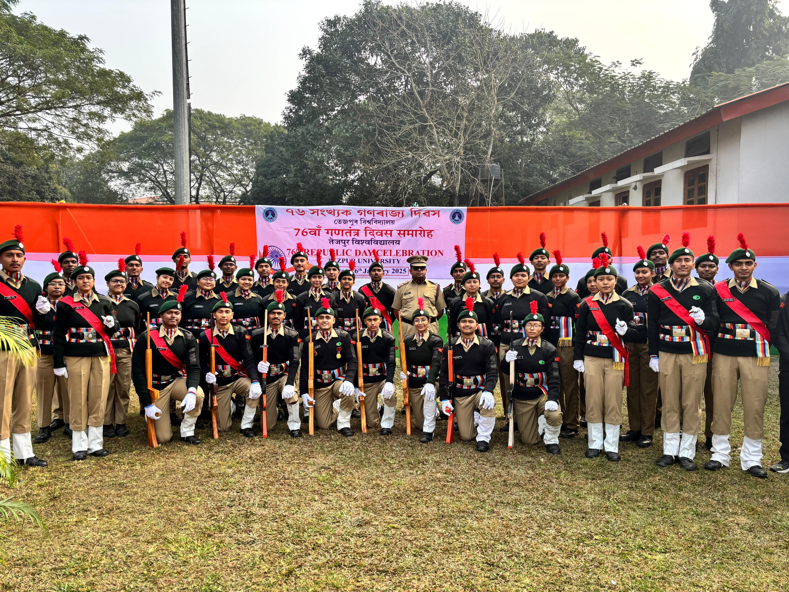
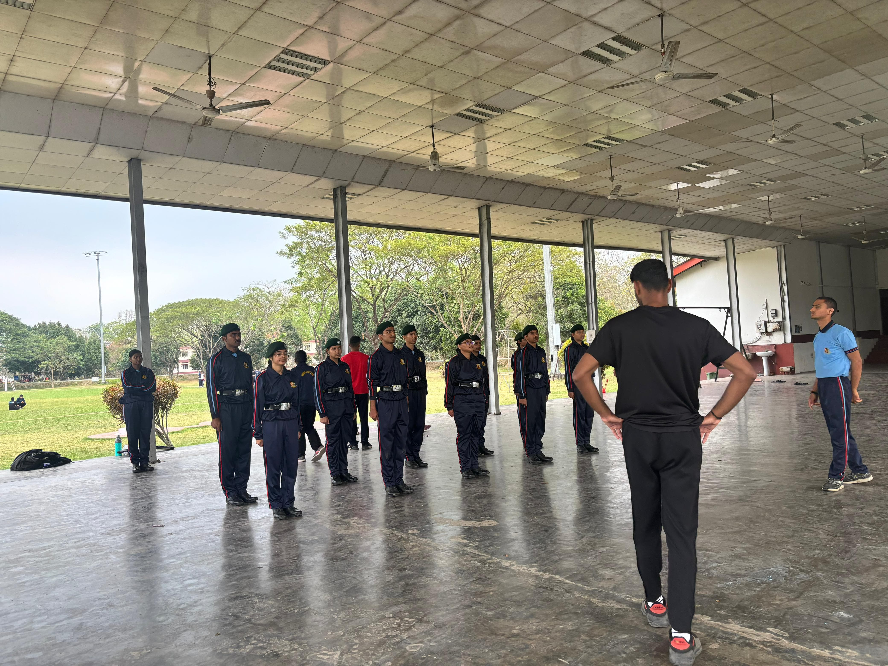
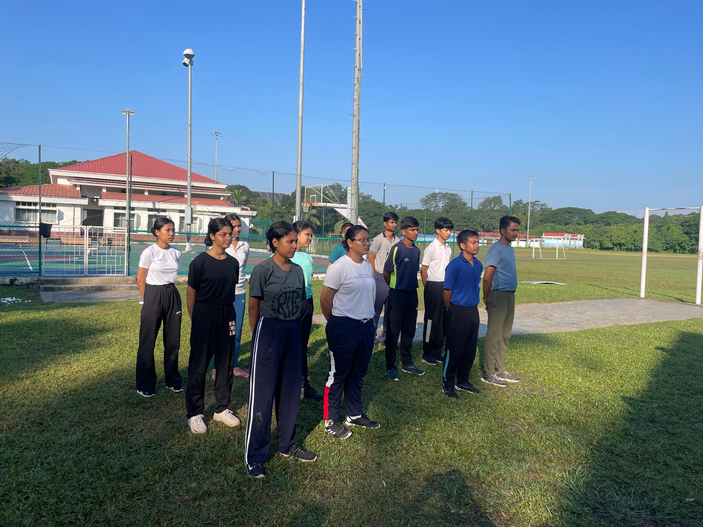
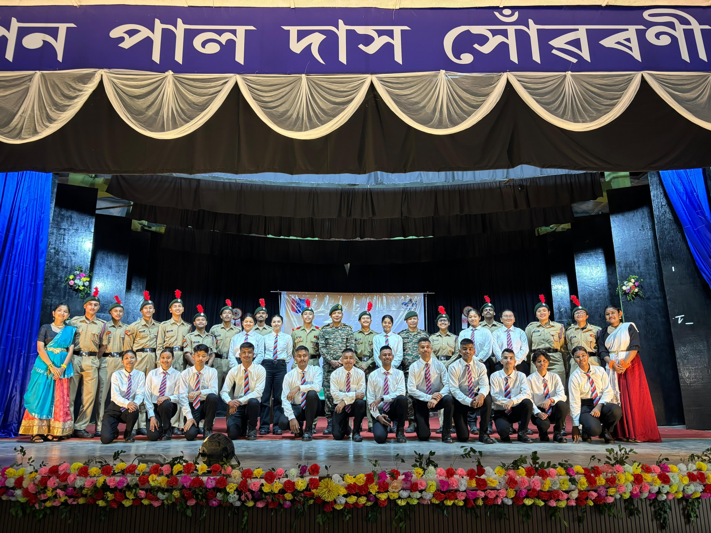
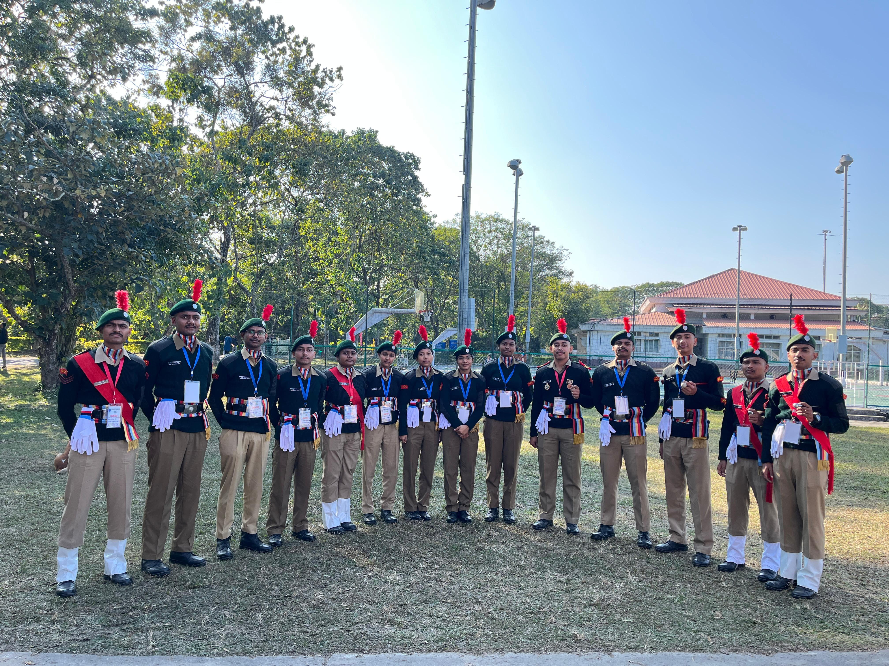
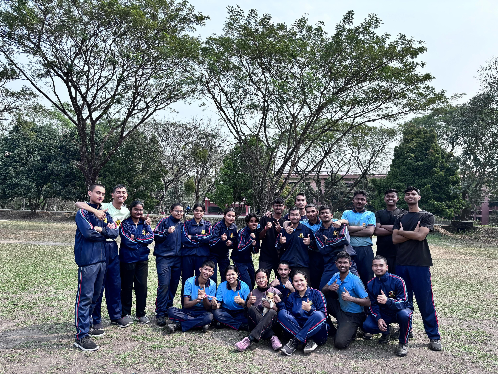

Developing Discipline, Leadership, and Service among the youth of India.
NCC Tezpur University was established on September 1, 2011, under the 5 Assam Bn Tezpur C/O HQ 4 Corps and NCC NER Directorate, Shillong. The unit has been allotted 60 vacancies, currently filled by cadets — both boys and girls — who undergo training on campus, at NCC camps, police firing ranges, and other locations.
The university has successfully organized two National Integration Camps on its campus in 2013 and 2014. The 5 Assam Bn provides uniforms and NCC kits to the cadets.
NCC classes are conducted regularly — theory sessions are held at the Department of Education and practical classes at the university playground. Instructors for practical classes are provided by the 5 Assam Bn.
Active Cadets
Years of Service
National Camps
The NCC TU Unit is led by Dr. Hitesh Sharma, who serves as the NCC Officer CTO and Assistant Professor at the Department of Education, Tezpur University. Dr. Sharma holds an NCC C certificate with Grade B from the 9 MP Battalion NCC Indore (Madhya Pradesh). He has attended three CATC and one Army attachment camp during his student life.
The NCC provides exposure to cadets in a wide range of activities, with a distinct emphasis on Social Services, Discipline, and Adventure Training.






The National Cadet Corps (NCC) is a youth development movement with enormous potential for nation building. It provides opportunities for the all-round development of youth with a sense of Duty, Commitment, Dedication, Discipline and Moral Values so that they become able leaders and useful citizens. NCC is open to all regular students of schools and colleges on a voluntary basis with no liability for active military service.
The NCC was established on 16 April 1948 in India, following the National Cadet Corps Act of 1948.
Yes, NCC is an educational program that integrates elements of military training. It is conducted within the academic framework and cadets receive credit for participation at many universities including Tezpur University.
Enrollment is open to regular students of Tezpur University. Visit the NCC Office in Room No. 210, First Floor, Academic Building I, or contact Dr. (Lt.) Hitesh Sharma at hitesh@tezu.ernet.in to inquire about available vacancies and the enrollment process.
NCC offers three levels of certification: A, B, and C certificates. The C Certificate with a good grade carries significant value — it provides advantages in recruitment to the Armed Forces, Central Police Organisations, and various government service examinations.